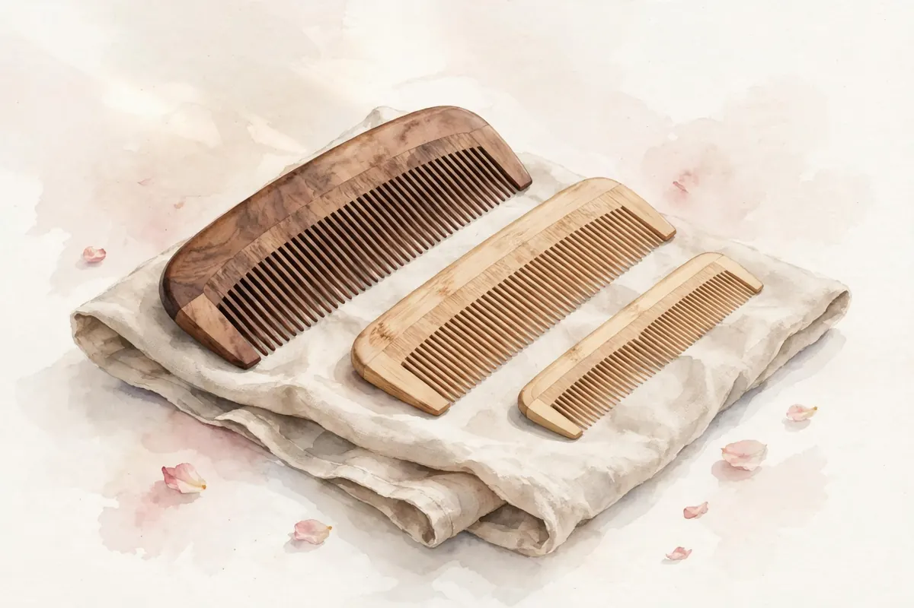
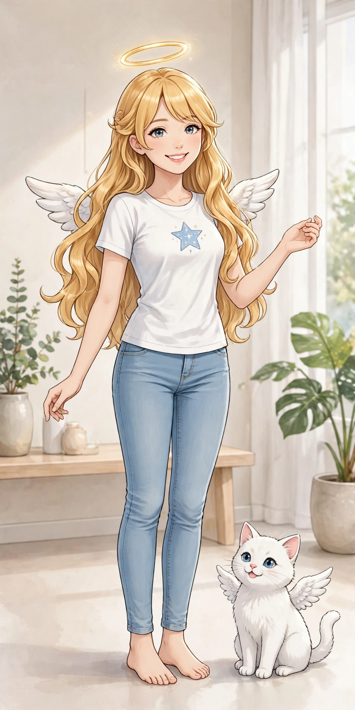

トップ ＞ ヘアケア ＞ くしの素材表示と使い分け：木・竹・プラスチック・金属
くしの素材表示と使い分け：木・竹・プラスチック・金属

くしは、髪をとかすだけの道具だと思われがちですが、素材が違うと、手に伝わる感触も、髪のすべり方も変わります。木のくし、竹のくし、プラスチックのくし、金属のくし、それぞれに手ざわりがあり、使い方の向き不向きもあります。施術の現場でも、頭皮に触れる仕事の合間に、くしの素材の話になることがあります。この記事では、くしの素材表示の読み方と、素材ごとの使い分けを整理します。特定の商品の話ではなく、素材の感触と手入れの考え方です。
素材ごとの感触と表示の見方
木のくしは、手にしっとりとなじむ感触が特徴です。重さがあり、持ち手が安定するので、ゆっくりととかしたいときに手に取る人が多い素材です。静電気が気になる季節に、木のくしを選ぶ人もいます。表示では、木の種類が書かれていることがあります。種類によって硬さや色合いが違うので、表示の木の名前も一緒に確認すると、選び方の目安になります。
竹のくしは、木よりも軽く、しなやかな感触があります。歯の先が細く、髪の分け目をつけるときや、細かい部分を整えるときに向いているとされています。プラスチックのくしは、軽くて水に強いのが特徴です。お風呂場や洗面所で使う場合や、持ち運ぶ場合に選ばれることが多い素材です。表示では、使われている樹脂の種類が書かれていることがあります。
金属のくしは、すべりがよく、髪の流れを整えるときに使われることがあります。重さがあるので、手にしっかりした感触があります。ブラシの毛にも種類があり、天然毛とナイロン毛では感触が違います。天然毛はしなやかで、髪の表面をなでるような感触です。ナイロン毛はハリがあり、絡まりをほぐすときに使われることが多い素材です。表示では、毛の種類が書かれていることがあるので、購入前に確認してください。
使い方の分け方
くしの使い分けは、髪が濡れているか乾いているかで考えます。濡れた髪は、乾いた髪よりも絡まりやすく、引っかかりやすい状態です。濡れた髪をとかすときは、歯の間隔が広いくしで、毛先から少しずつほぐすようにすると、引っかかりが少なくなります。乾いた髪をとかすときは、歯の間隔がふつうのくしで、頭皮から毛先へ、ゆっくりととかす流れになります。
絡まりをほぐすときは、毛先から始めるのが基本です。根元から一気にとかすと、絡まりが固まってしまいます。毛先の絡まりをほぐしてから、少しずつ根元へ進む、という段取りです。頭皮に当てるときは、歯の先を軽く当てる程度にします。強く押し当てると、頭皮への負担が大きくなります。くしは「とかす」道具であると同時に、頭皮に触れる道具でもある、という意識が大切です。
分け目をつけるときや、前髪を整えるときは、歯の細かいくしや、柄の先が細いくしが使いやすいです。反対に、髪全体を大きく整えるときは、歯の間隔が広く、面の大きいくしが向いています。ひとつのくしで何もかも済ませるのではなく、場面ごとに使い分ける、という考え方です。
手入れと替えどきの見方
くしは、毎日の手入れで長く使える道具です。歯の間にたまった髪の毛やほこりは、こまめに取り除きます。木や竹のくしは、水に長く浸けると、素材が傷むことがあります。洗うときは、短い時間でさっと洗い、乾いた布で拭いてから、風通しのよい場所で乾かします。プラスチックのくしは、水洗いがしやすい素材ですが、歯の根元に汚れがたまりやすいので、歯ブラシなどでこまめに落とすと、清潔に保てます。
替えどきの目安は、歯の状態です。歯が欠けたり、曲がったり、先がとがってきたりした場合は、髪への引っかかりが増えるので、替えどきのサインです。ブラシの毛が抜けやすくなったり、毛の先が広がってきたりした場合も、同じように替えどきです。くしは毎日手に取る道具だからこそ、歯の状態をときどき確認する習慣があると、髪への負担を減らせます。
くしの保管場所は、湿気の少ない場所が向いています。洗面所の棚に置く場合は、水がかかりにくい場所を選んでください。髪の状態で気になることが続く場合は、美容師に相談してください。この記事は素材と使い方の案内であり、商品ごとに表示がある場合は、そちらが優先です。
セラフィナ「くしは“とかす道具”じゃなくて“触れる道具”。素材の感触で選んでみて」

セラフィナ｜美容の道具箱の案内役
「量と表示が分かれば、美容は失敗しない。」——セラフィナと白猫のモコが、買う前のチェックポイントを案内します。綺麗になりたい気持ちに正直に、でも表示は冷静に読むのが、このサイトの約束です。